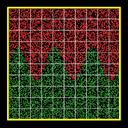
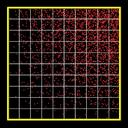
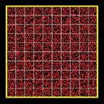

create_particles command
create_particles/kk command
Syntax:
create_particles mix-ID style args keyword value ...
mix-ID = ID of mixture to use when creating particles
style = n or single
n args = Np Np = 0 or number of particles to create single args = species-ID x y z vx vy vz species-ID = ID of species of single particle x,y,z = position of particle (distance units) vx,vy,vz = velocity of particle (velocity units)
zero or more keyword/value pairs may be appended
keyword = cut or global or region or species or density or temperature or vstream or custom or twopass
cut value = yes or no global value = yes or no region value = region-ID species values = svar xvar yvar zvar svar = name of equal-style variable for species type xvar,yvar,zvar = names of internal-style variables for x,y,z density values = dvar xvar yvar zvar svar = name of equal-style variable for density xvar,yvar,zvar = names of internal-style variables for x,y,z temperature values = tvar xvar yvar zvar tvar = name of equal-style variable for temperature xvar,yvar,zvar = names of internal-style variables for x,y,z vstream values = vxvar vyvar vzvar xvar yvar zvar vxvar,vyvar,vzvar = names of equal-style variables for vx,vy,vz xvar,yvar,zvar = names of internal-style variables for x,y,z custom values = attribute g_name attribute = density or temperature or vstream or fractions g_name = custom per-grid vector or array with name twopass values = none
Examples:
create_particles background n 0
create_particles air n 100000 region sphere
create_particles air n 100000 global yes
create_particles air single 3 5.0 6.0 5.4 10.0 -1.0 0.0
create_particles air n 0 species mySpecies xpos NULL zpos
create_particles air n 0 density myDens xgrid ygrid NULL
create_particles air n 0 temperature myTemp xgrid ygrid zgrid
create_particles air n 0 velocity myVx NULL myVz xpos ypos NULL twopass
Description:
Create particles and add them to the simulation domain. The attributes of individual particles, such as species and velocity, are determined by the mixture attributes, as specied by the mix-ID. In particular the temp, trot, tvib, and vstream attributes of the mixture affect create particle velocities and internal energy modes. See the mixture command for more details. Note that this command can be used multiple times to add more and more particles.
IMPORTANT NOTE: When a particle is created at a specified temperature (as set by the mixture command), it's rotational and vibrational energy will also be initialized, consistent with the corresponding mixture temperatures. The rotate and vibrate options of the collide_modify command determine how internal energy modes are initialized. If the collide command has not yet been specified, then no rotational or vibrational energy will be assigned to created particles. Thus if you wish to create particles with non-zero internal energy, the collide and (optionally) collide_modify commands must be used before this command.
If the n style is used with Np = 0, then the number of created particles is calculated by SPARTA as a function of the global fnum value, the mixture number density, and the flow volume of the simulation domain.
The fnum value is set by the global fnum command. The mixture nrho is set by the mixture command. The flow volume of the simulation is the total volume of the simulation domain as specified by the create_box command, minus any volume that is interior to surfaces defined by the read_surf command. Note that the flow volume includes volume contributions from grid cells cut by surfaces. However particles are only created in grid cells entirely external to surfaces. This means that particles may be created in external cells at a (slightly) higher density to compensate for no particles being created in cut cells that still contribute to the overall flow volume.
If the n style is used with a non-zero Np, then exactly Np particles are created, which can be useful for debugging or benchmarking purposes.
Based on the value of Np, each grid cell will have a target number of particles M to insert, which is a function of the cell's flow volume as compared to the total system flow volume. If M has a fractional value, e.g. 12.5, then 12 particles will be inserted, and a 13th depending on the outcome of a random number generation. As grid cells are looped over, the remainder fraction is accumulated, so that exactly Np particles are created across all the processors.
IMPORTANT NOTE: The preceeding calculation is actually done using weighted cell volumes. Grid cells can be weighted using the global weight command.
Each particle is inserted at a random location within the grid cell. The particle species is chosen randomly in accord with the frac settings of the collection of species in the mixture, as set by the mixture command. The velocity of the particle is set to the sum of the streaming velocity of the mixture and a thermal velocity sampled from the thermal temperature of the mixture. Both the streaming velocity and thermal temperature are also set by the mixture command. The internal rotational and vibrational energies of the particle are also set based on the trot and tvib settings for the mixture, as explained above. These default values based on the mixture properties can be overridden by keywords explained below.
The single style creates a single particle. This can be useful for debugging purposes, e.g. to advect a single particle towards a surface. A single particle of the specified species is inserted at the specified position and with the specified velocity. In this case the mix-ID is ignored.
The meaning of the optional keywords are described in the subsequent sub-sections.
The cut keyword controls how grid cells cut by surfaces are treated. If yes is specified (the default) then particles are added to the flow portion of those cells (outside the surfaces). If no is specified, then particles are only created in grid cells which are entirely external to surfaces, not in grid cells cut by surfaces.
The global keyword only applies when the n style is used, and controls how particles are generated in parallel.
If the value is yes, then every processor loops over all Np particles. As the coordinates of each is generated, each processor checks what grid cell it is in, and only stores the particle if it owns that grid cell. Thus an identical set of particles are created, no matter how many processors are running the simulation
IMPORTANT NOTE: The global yes option is not yet implemented.
If the value is no, then each of the P processors generates a N/P subset of particles, using its own random number generation. It only adds particles to grid cells that it owns, as described above. This is a faster way to generate a large number of particles, but means that the individual attributes of particles will depend on the number of processors and the mapping of grid cells to procesors. The overall set of created particles should have the same statistical properties as with the yes setting.
If the region keyword is used, then a particle will only added if its position is within the specified region-ID. This can be used to only allow particle insertion within a subset of the simulation domain. Note that the side option for the region command can be used to define whether the inside or outside of the geometric region is considered to be "in" the region.
IMPORTANT NOTE: If the region and n keywords are used together, less than N particles may be added. This is because grid cells will be candidates for particle insertion, unless they are entirely outside the bounding box that encloses the region. Particles those grid cells attempt to add are included in the count for N, even if some or all of the particle insertions are rejected due to not being inside the region.
The species, density, temperature, and vstream keywords can be used to create particles with properties which are spatially dependent. This is done by defined equal-style variables with formulas that include the coordinates of the created particle or the coordinates of the grid cell containing the particle.
The formulas for these 4 keywords should be in the following form, where (x,y,z) are the coordinates of the created particle, and (cx,cy,cz) are the coordinates of the center point of the grid cell the particle is in.
species formula = f(x,y,z) produces an integer from 1 to Nspecies
density = f(cx,cy,cz) produces a unitless scale factor
temperature = f(x,y,z) = produces a unitless scale factor
vstream = 3 formulas for vx,vy,vz = vx(x,y,z) (and vy,vz) produces a value in velocity units
Note that the species, temperature, vstream keywords define particle attributes based on the position of an individual particle. This is in contrast to the custom density, custom temperature, custom vstream, and custom fractions keywords described below, which define particle attributes at the resolution of individual grid cells. The density keyword is similar to the custom density keyword, in that it operates on individual grid cells.
The species keyword can be used to create particles with a spatially-dependent separation of species. The specified svar is the name of an equal-style variable whose formula should evaluate to a species type, i.e. an integer from 1 to Nsp, where Nsp is the number of species in the mixture with mix-ID. Since equal-style variables evaluate to floating-point values, this value is truncated to an integer value. The formula for the species variable can use one or two or three variables which will store the x, y, or z coordinates of the particle that is being created. If used, these variables must be internal-style variables defined in the input script; their initial numeric values can be anything. They must be internal-style variables, because this command resets their values directly. Their names are specified as xvar, yvar, and zvar. If any of them is not used in the svar formula, it can be specified as NULL.
When a particle is added, its coordinates are stored in the xvar, yvar, zvar variables if they are specified. The svar variable is then evaluated. The returned value is used to set the species of that particle, based on the list of species defined for the mixture. If the returned value is <= 0 or greater than Nsp = the number of species in the mixture, then no particle is created.
As an example, these commands can be used in a 2d simulation, to create a particle distribution with species 1 on top of species 2 with a sinudoidal interface between the two species, as illustrated in the snapshot of the initial particle distribution. Click on the image for a larger version. Note that when using this option less than the requested N particles can be created if the species variable returns values <= 0 or greater than Nsp = the number of species in the mixture.
variable x internal 0 variable y internal 0 variable n equal 3 variable s equal "(v_y < 0.5*(ylo+yhi) + 0.15*yhi*sin(2*PI*v_n*v_x/xhi)) + 1" create_particles species n 10000 species s x y NULL


The density keyword can be used to create particles with a spatially-dependent density variation. The specified dvar is the name of an equal-style variable whose formula should evaluate to a positive value. The formula for dvar can use one or two or three variables which will store the x, y, or z coordinates of the geometric center point of a grid cell. If used, these other variables must be internal-style variables defined in the input script; their initial numeric values can by anything. Their names are specified as xvar, yvar, and zvar. If any of them is not used in the dvar formula, it can be specified as NULL.
When particles are added to a grid cell, its center point coordinates are stored in xvar, yvar, zvar if they are defined. The dvar variable is then evaluated. The returned value is used as a scale factor on the number of particles to create in that grid cell. Thus a value of 0.5 would create half as many particles in that grid cell as would otherwise be the case, due either to the global fnum and mixture nrho settings that define the density or due to the specified Np > 0 value, as explained above. A value of 1.2 would create 20% more particles in that grid cell.
As an example, these commands can be used in a 2d simulation, to create more particles towards the upper right corner of the domain and less towards the lower left corner, as illustrated in the snapshot of the initial particle distribution. Click on the image for a larger version. Note that less than requested N particles will be created in this case because all the scale factors generated by the variable d are less than 1.0.
variable x internal 0 variable y internal 0 variable d equal "v_x/xhi * v_y/yhi" create_particles air n 10000 density d x y NULL


The temperature keyword can be used to create particles with a spatially-dependent thermal temperature variation. The specified tvar is the name of an equal-style variable whose formula should evaluate to a positive value. The formula for the tvar variable can use one or two or three variables which will store the x, y, or z coordinates of the geometric center point of a grid cell. If used, these other variables must be internal-style variables defined in the input script; their initial numeric values can by anything. Their names are specified as xvar, yvar, and zvar. If any of them is not used in the tvar formula, it can be specified as NULL.
When a particle is created, its coordinates are stored in xvar, yvar, zvar if they are defined. The tvar variable is then evaluated. The returned value is used as a scale factor on all 3 mixture temperatures (thermal, rotational, vibrational) used to initialize the particle's velocity and internal energies, as explained above. Thus a value of 0.5 would create particles using temperatures half of what the mixture specifies. A value of 1.2 would create particles using 20% higher temperatures.
As an example, these commands can be used in a 2d simulation, to create a thermal temperature gradient in x, where the temperature on the left side of the box is the default value, and the temperature on the right side is 3x larger.
variable x internal 0 variable t equal "1.0 + 2.0*(v_x-xlo)/(xhi-xlo)" create_particles air n 10000 temperature t x NULL NULL
The vstream keyword can be used to create particles with a spatially-dependent streaming velocity. The specified vxvar, vyvar, vzvar are the names of equal-style variables whose formulas should evaluate to the corresponding component of the streaming velocity. If any of them are specified as NULL, then that streaming velocity component is set by the corresponding mixture streaming velocity component, the same as if the vstream keyword were not used.
The formulas for the vxvar, vyvar, vzvar variables can use one or two or three variables which will store the x, y, or z coordinates of the particle that is being created. If used, these other variables must be internal-style variables defined in the input script; their initial numeric values can by anything. Their names are specified as xvar, yvar, and zvar. If any of them is not used in the vxvar, vyvar, vzvar formulas, it can be specified as NULL.
When a particle is added, its coordinates are stored in xvar, yvar, zvar if they are defined. The vxvar, vyvar, vzvar variables are then evaluated. The returned values are used to set the streaming velocity of that particle. A thermal velocity is also added to the particle, using the temperature set by the mixture or temp keyword, as described above.
As an example, these commands can be used in a 2d simulation, to give particles an initial velocity pointing towards the upper right corner of the domain with a magnitude that makes them all reach that point at the same time (assuming their thermal velocity is small and it is not a collisional flow). Click on the image to play an animation of the effect.
variable x internal 0 variable y internal 0 variable vx equal (xhi-v_x)/(1000*7.0e-9) # timesteps and timestep-size variable vy equal (yhi-v_y)/(1000*7.0e-9) create_particles air n 10000 velocity vx vy NULL x y NULL


The custom keyword can be used one or more times to tailor the attributes of created particles within individual grid cells. This is done by using custom per-grid vectors or arrays defined by other commands.
For example, the read_grid command can read per-grid attributes included in a grid data file. The custom command allows for definition of custom per-grid vectors or arrays and their initialization by use of grid-style variables or by reading the values from a SPARTA grid file or a coarse-grid file.
See Section Howto 6.17 for a discussion of custom per-grid attributes.
The attribute values of the custom keyword can be any of the following:
density = number density (# per volume or area units) = per-grid vector
temperature = temperature (temperature units) = per-grid vector
vstream = 3-component streaming velocity (velocity units) = per-grid array with 3 columns
fractions = species fractions (unitless) = per-grid array
The g_name value of the custom keyword is the name of the custom per-grid vector or array. It must store floating-point values and be a vector or array, as indicated in the list above.
Note that the custom keyword defines particle attributes at the resolution of individual grid cells. This is in contrast to the species, temperature, vstream keywords described above, which can define particle attributes based on the position of an individual particle. The custom density keyword is similar to the density keyword, in that it operates on individual grid cells.
The custom attribute density sets a number density for each grid cell from a per-grid custom vector. The values are used to calculate the count of particles created within each grid cell. The nrho values should be in per-volume units = per-length^3 for 3d models or axisymmetric models. The values should be in per-area units = per-length^2 for 2d models.
Note that if Np = 0, then the custom nrho value effectively increases or decreases the number of particles created in a cell by the scale factor custom_rho/mixture_nrho. As compared to the number created if the custom nrho keyword were not used. If Np > 0, the number of particles created in a cell is increased or decreased by the same scale factor custom_nrho/mixture_nrho, only now the scale factor is applied to the count of particles for the grid cell calculated as explained above when Np > 0.
The custom attribute temperature sets a temperature for each grid cell from a per-grid vector. This temperature is divided by the mixture thermal temperature to calculate a scale factor. The scale factor is applied to all 3 mixture temperatures (thermal, rotational, vibrational) used to initialize the velocity and internal energies, as explained above, for each particle created in the grid cell. Thus a scale factor of 0.5 would create particles using temperatures half of what the mixture specifies. A value of 1.2 would create particles using 20% higher temperatures.
The custom attribute vstream sets a streaming velocity for particles created in each grid cell from a 3-column per-grid custom array.
The custom attribute fractions sets the relative species fractions for each grid cell from an N-column per-grid custom array, where N is the number of species in the mixture specified with this command. For each grid cell, the N values will be used to set the relative fractions of created particles in that cell.
For each grid cell, the N per-species fractional values must sum to 1.0. However, one or more of the numeric values can be < zero, say M of them. In this case, each of the M values will be reset to (1 - sum)/M, where sum is the sum of the N-M values which are >= zero.
Note that the ordering of species within the N columns of the custom per-grid array, is the same as the order of species within the mix-ID mixture. This is determined by the mixture command. It is the order the gas species names were listed when the mixture command was specified (one or more times).
The twopass keyword does not require a value. If used, the creation procedure will loop over the creation grid cells twice, the same as the KOKKOS package version of this command does, so that it can reallocate memory efficiently, e.g. on a GPU. If this keyword is used the non-KOKKOS and KOKKOS version will generate exactly the same set of particles, which makes debugging easier. If the keyword is not used, the non-KOKKOS and KOKKOS runs will use random numbers differently and thus generate different particles, though they will be statistically similar.
This command (or more generically styles) can take a suffix as shown at the top of this page.
Styles with a kk suffix are functionally the same as the corresponding style without the suffix. They have been optimized to run faster, depending on your available hardware, as discussed in the Accelerating SPARTA section of the manual. The accelerated styles take the same arguments and should produce the same results, except for different random number, round-off and precision issues.
These accelerated styles are part of the KOKKOS package. They are only enabled if SPARTA was built with that package. See the Making SPARTA section for more info.
You can specify the accelerated styles explicitly in your input script by including their suffix, or you can use the -suffix command-line switch when you invoke SPARTA, or you can use the suffix command in your input script.
See the Accelerating SPARTA section of the manual for more instructions on how to use the accelerated styles effectively.
Restrictions:
The keywords density and custom density cannot both be used. This is because they are both methods for setting the number of particles created. Ditto for temperature amd custom temperature. Ditto for vstream and custom vstream. Ditto for species and custom fractions.
Related commands:
Default:
The option defaults are cut = yes and global = no.